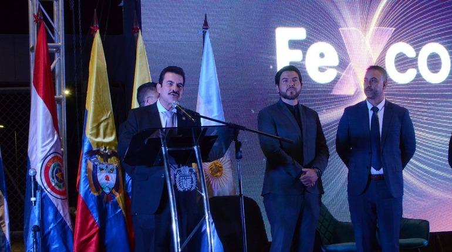

ULTIMAN DETALLES EN PROYECTOS PARA LA INAUGURACIÓN
FEXCO 2025 alista su inauguración con nuevos espacios como la Plaza de Comidas, el Pabellón del Emprendedor y el Paseo del Bicentenario. Con más de 1.500 expositores de 30 países, la feria espera generar 175 millones de dólares y más de 35 mil empleos entre el 24 de abril y 4 de mayo.